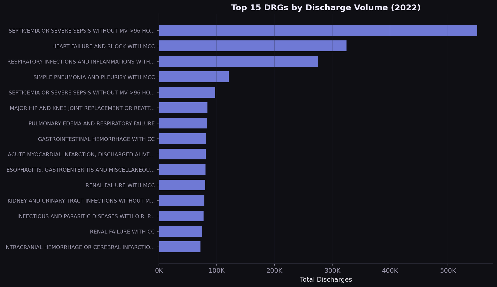
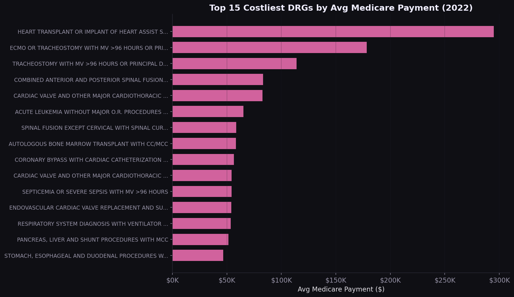
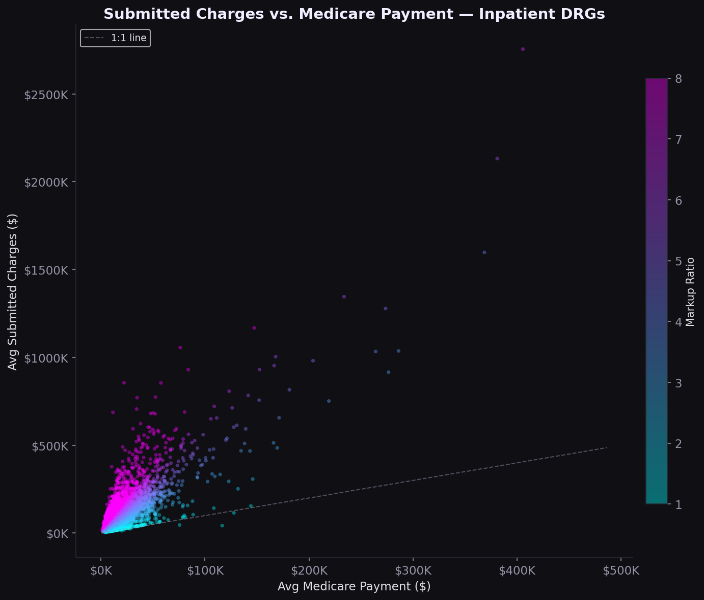
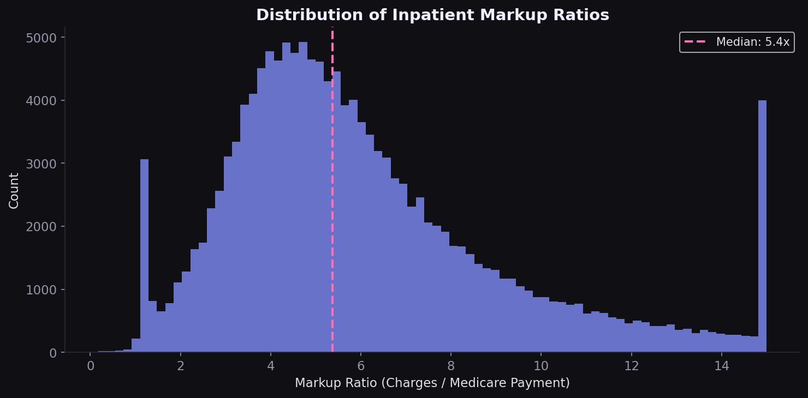
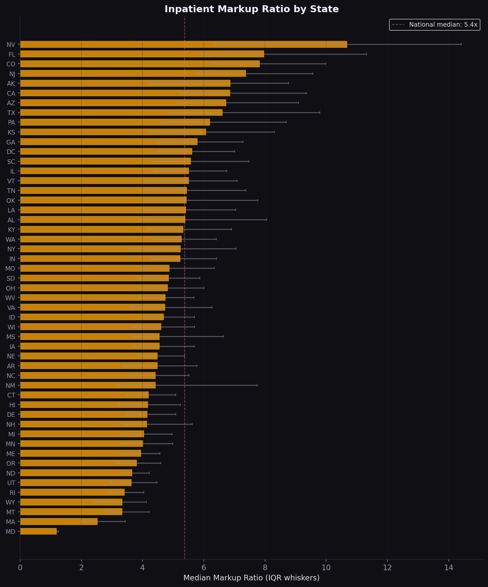
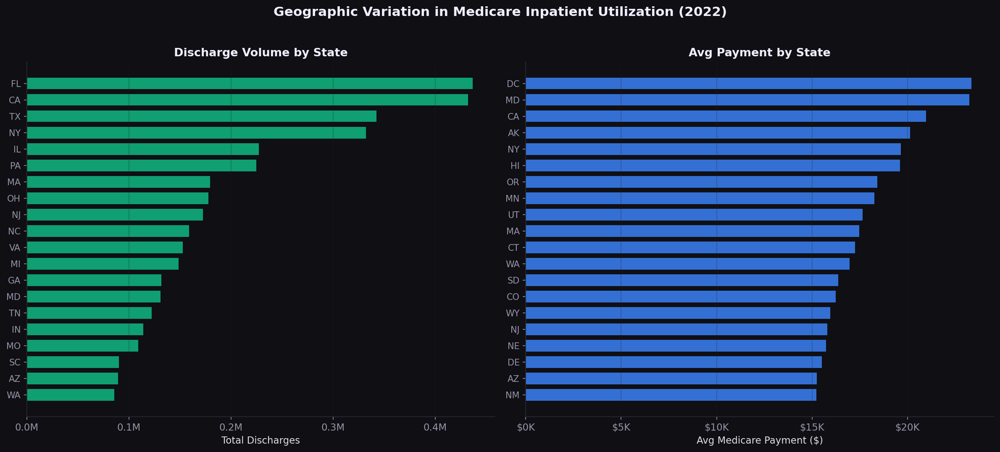
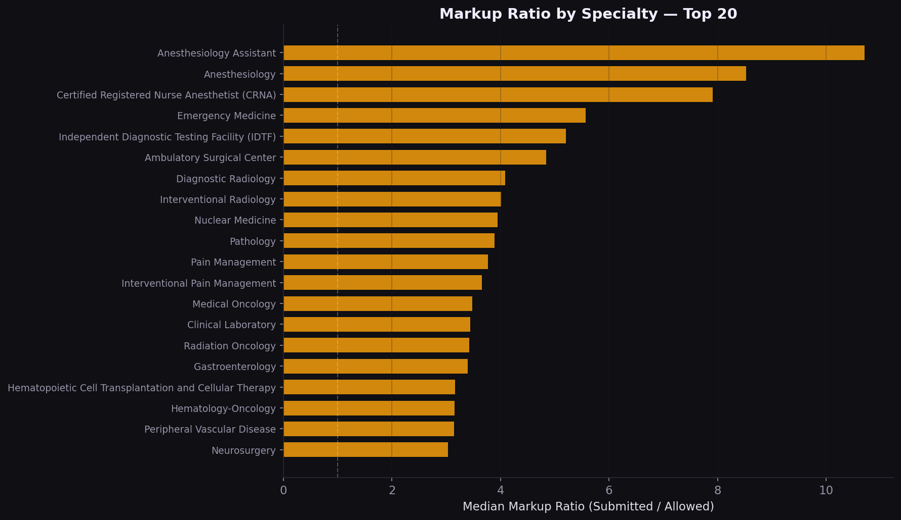
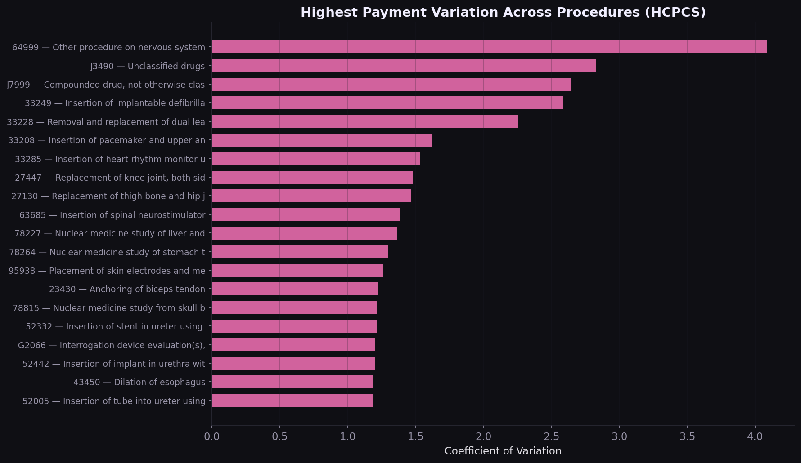

How do Medicare payment rates and utilization patterns vary across providers, procedures, and geographies, and what does this imply for payer contracting strategy?
Hospitals set their own chargemasters. Medicare pays a fraction of what providers bill. But the gap between charges and payments varies wildly by state, procedure, and provider. For payers benchmarking commercial rates against Medicare, understanding this spread is the foundation of contracting strategy. The question is: where is the markup highest, and what drives it?
I combined the CMS Medicare Inpatient Hospital PUF (145,742 provider-DRG records) with the Physician and Other Practitioners PUF (9.76M provider-HCPCS records) to build a complete picture of Medicare payment variation.
The top 5 DRGs account for over 25% of all Medicare inpatient discharges. Septicemia alone represents 550,000 stays. Any value-based contract that doesn't address these conditions is leaving the highest-volume diagnoses unmanaged.

The costliest DRGs are surgical and transplant-related. For commercial payers benchmarking against Medicare, these are the procedures where a 10% rate difference translates to $20K-$30K per case.

Nationally, hospitals charge 5.4x what Medicare pays (median). The scatter plot shows a nonlinear relationship: lower-cost procedures have the widest markup spread, while high-cost DRGs compress toward smaller ratios. The distribution is right-skewed, with a minority of hospitals charging 8-12x Medicare rates.


The 9.5x spread in median markup between Maryland and Nevada is not random. Maryland's all-payer rate-setting system compresses the charge-to-payment gap by regulation. States without rate controls show far higher markups. California, Texas, and Florida combine high volume with above-median markups, making them priority markets for rate renegotiation.


On the physician side, the volume-cost mismatch is a strategic signal. Lab and radiology drive spend through utilization; surgery drives it through unit price. Different levers apply: utilization management for the former, rate negotiation for the latter.


| Finding | Implication |
|---|---|
| Septicemia = 11% of volume | Bundled payment and readmission reduction programs should prioritize sepsis pathways |
| Median markup = 5.4x | Chargemaster-based contracts overpay; percent-of-Medicare benchmarks are more defensible |
| MD vs NV spread = 9.5x | State regulatory environment is a first-order variable; multi-state payers need state-specific playbooks |
| High-variation HCPCS codes | Procedure-level benchmarking can surface outlier providers billing 3-5x peers |
| Volume-cost specialty mismatch | Utilization management for high-volume specialties; rate negotiation for high-cost ones |
Data was downloaded directly from CMS public endpoints using a custom Python downloader. The inpatient file required Latin-1 encoding (not UTF-8). Both files were deduplicated on natural keys (CCN+DRG for inpatient, NPI+HCPCS+Place of Service for physician) with zero duplicates found. Physician data was filtered to US-only providers. A derived markup ratio (submitted charges / Medicare payment) was computed for both datasets. All analysis was done in four self-contained Jupyter notebooks with 14 figures saved at 150 DPI.
CMS Inpatient and Physician PUFs, 10M+ records. Pandas‑driven aggregation, volume‑weighted state and procedure metrics, and a state‑drilldown Plotly.js choropleth.
Interested in payer analytics, rate benchmarking, or claims data?
Get in touch